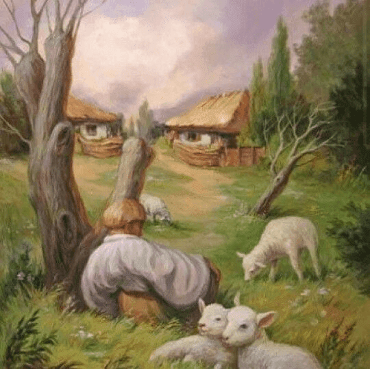
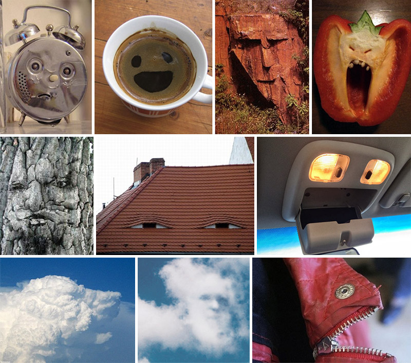
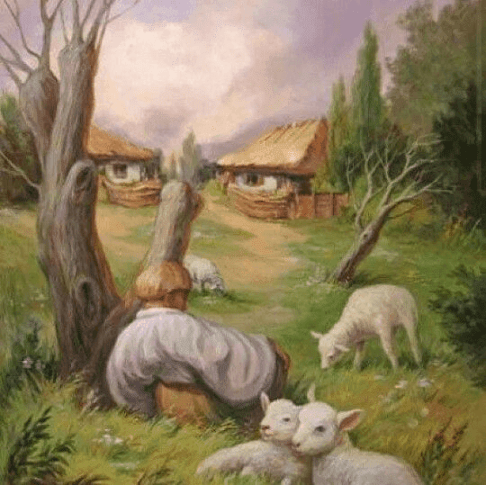
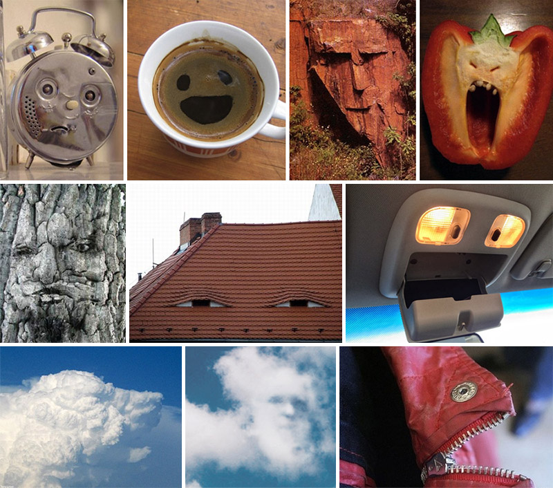

🤝✨📚💡⚙️🤖
Virtud conjunta:
una aproximación de ética de las virtudes para la IA
Juan Camilo Espejo-Serna
Facultad de FilosofÃa y Ciencias Humanas
Universidad de la Sabana
- ¿Pueden creer los LLM?
- ¿Pueden pensar?
- ¿Pueden entender un lenguaje?
- ¿Son agentes?
- ¿Pueden ser emociones?
- ¿Pueden ser conscientes?
Santiago Bellomo propone una reflexión FILOSÓFICA sobre el sentido de la educación en la era de la Inteligencia Artificial.
Temas
- FilosofÃa de la IA
- Loros estocásticos
- Injusticia algorÃtmica
1
FilosofÃa de la IA
¿Cuándo comienza la filosofÃa de la IA?
Para eso tenemos un juego
2
Loros estocásticos
La repetición del loro no es simplemente un juego; tiene un propósito pues su capacidad de imitar resulta práctica y útil.
ok .... y ¿estocástico?
¿Qué rol deben tener los loros estocásticos en nuestros espacios de aprendizaje?
3
Injusticia algorÃtmica


 


